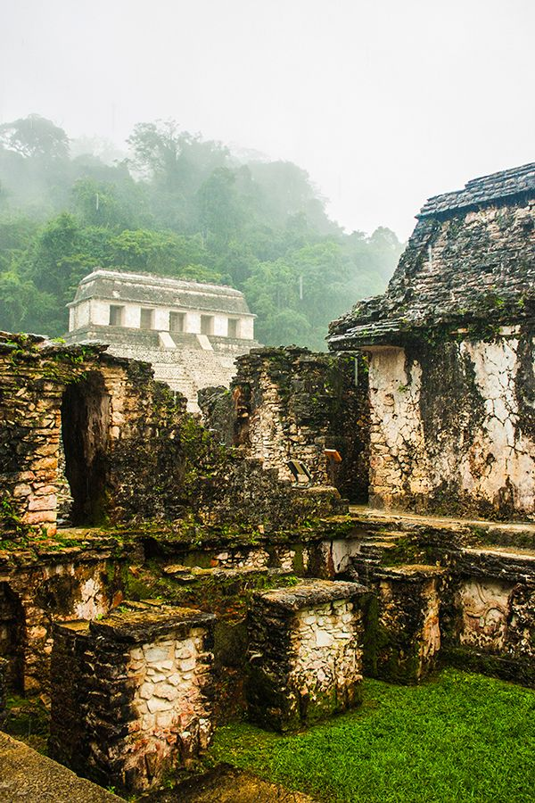
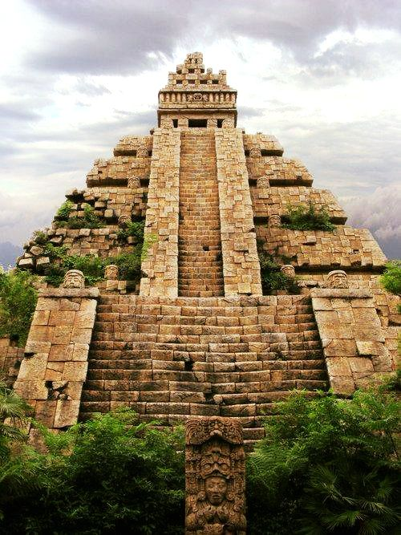
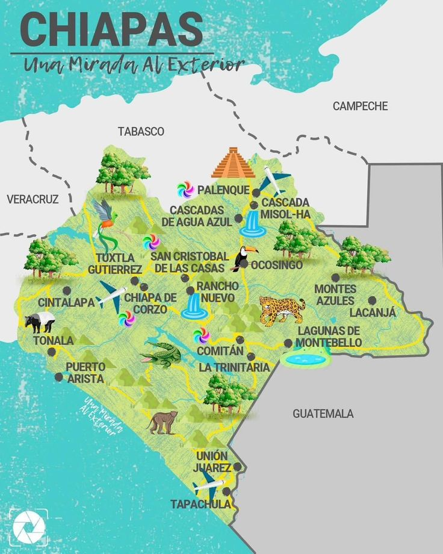
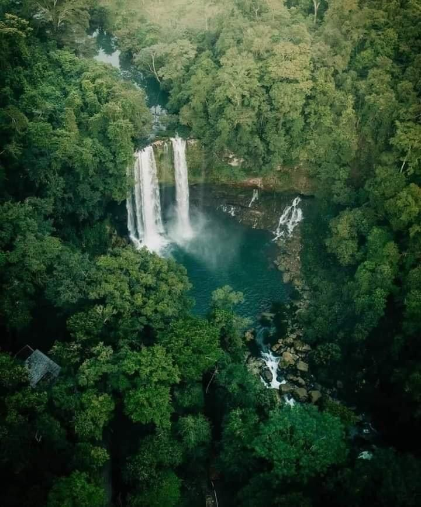
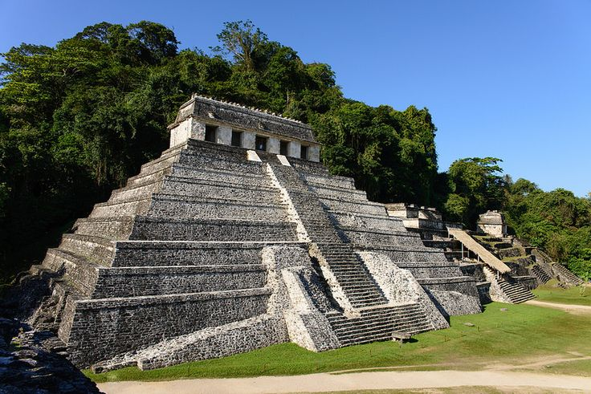
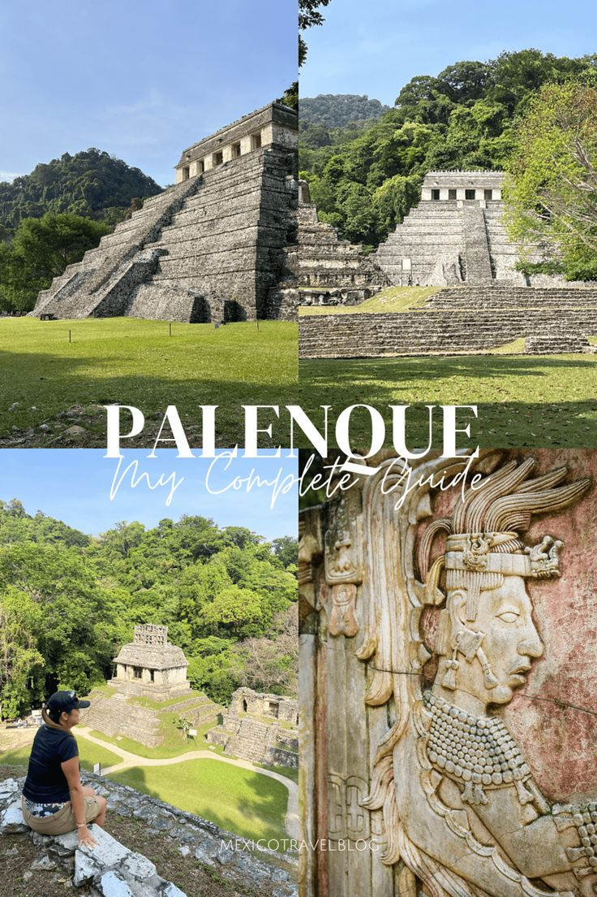
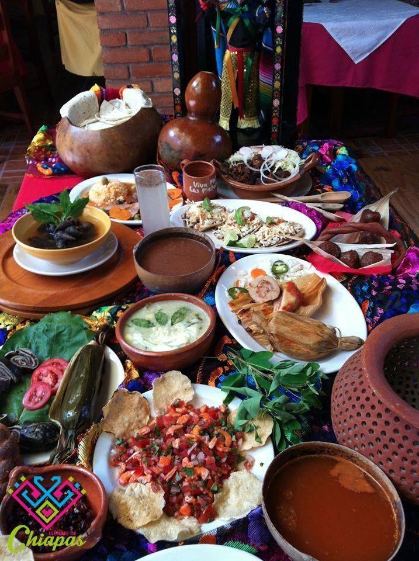
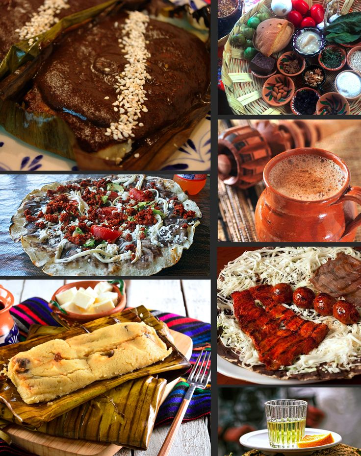
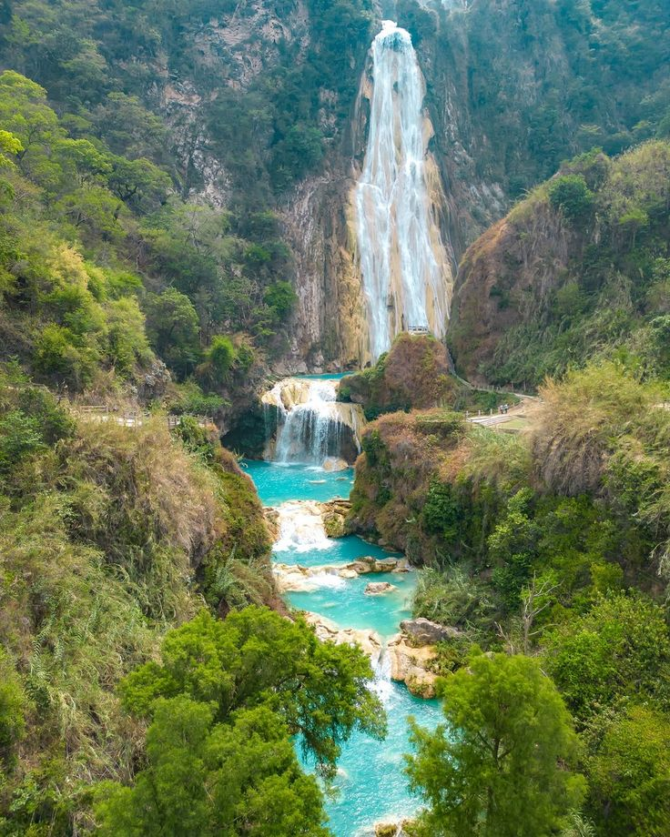
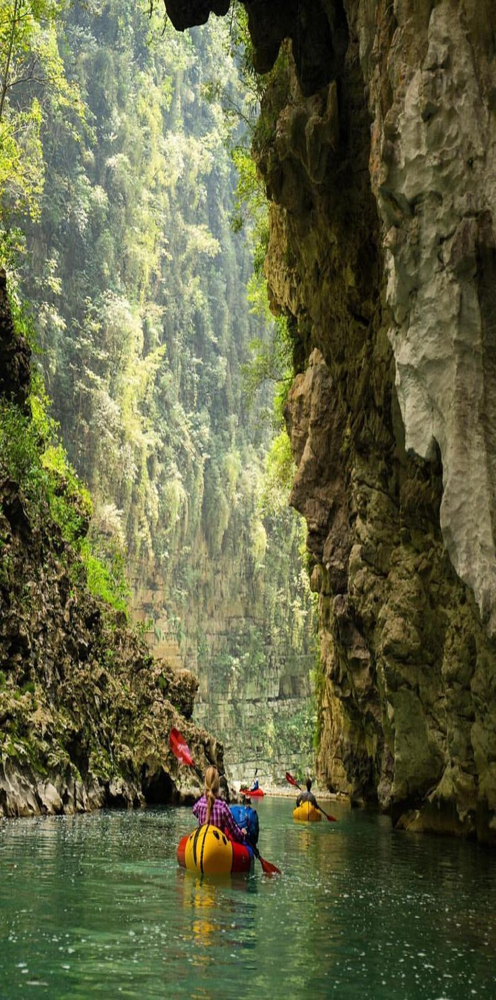

✨ Bienvenido
:contentReference[oaicite:0]{index=0} es uno de los sitios arqueológicos más impresionantes de México, rodeado de selva, historia y cultura maya.


📍 Información del lugar
Palenque se encuentra en el estado de Chiapas y fue una importante ciudad de la civilización maya. Su arquitectura, relieves y entorno natural lo hacen único.


🏛️ Lugares turísticos
Algunos de los lugares más importantes son el Templo de las Inscripciones, la zona arqueológica y las impresionantes ruinas rodeadas de selva.


🎭 Cultura y gastronomía
La cultura maya sigue viva en la región, con tradiciones, costumbres y una rica gastronomía que incluye tamales, platillos típicos y sabores únicos.


📸 Galería


📞 Contacto
Proyecto realizado por Esmeraldapascualjimenez 💜